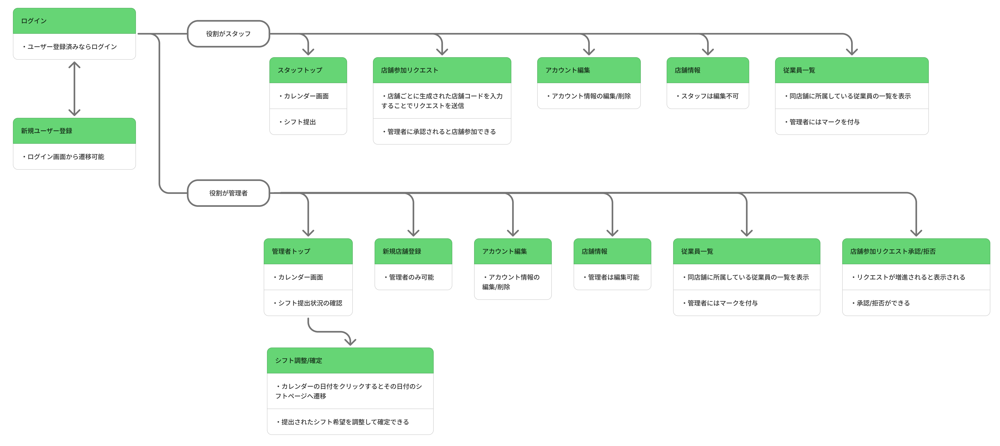

BestShift
Automatic Shift Management System
View GitHub Repository → デモを見るプロジェクト概要
Overview
アルバイトスタッフのシフト提出から、管理者のシフト表作成までを自動化・効率化するWebアプリケーションです。 現在は開発の初期フェーズとして、バックエンドの基盤構築およびデータベース設計を中心に進めています。 最終的には給料計算や人件費計算、求人などの機能も搭載したいと考えています。
開発の背景
Motivation
自分はアルバイトとして飲食店で働いており、シフトを作成するのに多くの時間と労力がかかっていることがわかりました。 多くの店舗で行われている手書きやSNSでのシフト回収や表計算ソフトへの手入力というアナログな工程を自動化し、 ヒューマンエラーの削減と作業時間の大幅な短縮を目指しています。また、Webアプリケーション開発やモバイルアプリ開発に興味があり、 独学で勉強するためにこのアプリケーションを制作しています。
技術スタック
Tech Stack
フロントエンド
- Framework: Next.js (App Router)
- Language: TypeScript
- Styling: Tailwind CSS
- State Management: React Context API
- HTTP Client: Axios
バックエンド
- Framework: Flask (Python)
- Database: SQLite (開発時)
- Database: PostgleSQL (実運用時)
- Auth: Flask-JWT-Extended
- Web Server: Gunicorn
モバイル
- Framework: Flutter
- Language: Dart
インフラ・運用
- Frontend Hosting: Vercel
- Backend Hosting: Render
- Database Hosting: Render (PostgreSQL)
- Container: Docker / Docker Compose
画面遷移図
Screen transition diagram
クリックして拡大できます

テストユーザー
Test Users
以下のテストユーザーでログイン可能です
| ユーザー名 | 役割 | パスワード |
|---|---|---|
| admin | オーナー | pass |
| yamada | スタッフ | pass |
| sato | スタッフ | pass |
| suzuki | スタッフ | pass |
| taro | スタッフ | pass |
| hanako | スタッフ | pass |
| jiro | スタッフ | pass |
| sakura | スタッフ | pass |
| akira | スタッフ | pass |
| yuki | スタッフ | pass |
| hana | スタッフ | pass |
現在の進捗
Current Status
- データベース設計: Shop, User, Shiftなどのモデルの実装とリレーションを定義。
- 各種機能の実装: ログイン, 新規ユーザー登録, シフト提出, アカウント編集, 店舗参加, 従業員一覧, 管理者シフト調整&確定, 新規店舗登録, 店舗参加リクエスト承認/拒否。
- モバイルアプリ版の開発: Flutterにてモバイルアプリも開発中。
- UI設計: 最低限のUIで開発中。
今後の展望
Future Work
- 営業時間と各時間当たりの定員の設定: 店舗ごとに営業時間および時間帯別の必要人数（ポジション別）を柔軟に設定できる機能の実装。曜日別設定や繁忙期対応も考慮。
- 複数店舗登録: スタッフ, オーナーともに複数店舗登録への対応
- シフトの自動確定システムの実装: シフト希望棄却率やポジションごとの熟達度、優先度などを考慮したアルゴリズムの作成
- UI設計:より直感的に操作できるようなUIの開発。
- モバイルアプリ開発: FlutterによるAndroid/IOSのアプリ開発。
- サービス運用: 本番環境での安定運用を想定し、ログ管理・エラーハンドリング・バックアップ体制の整備。将来的なスケールを見据えた設計の検討。
- セキュリティ強化:実運用に向けてセキュリティの強化が必要